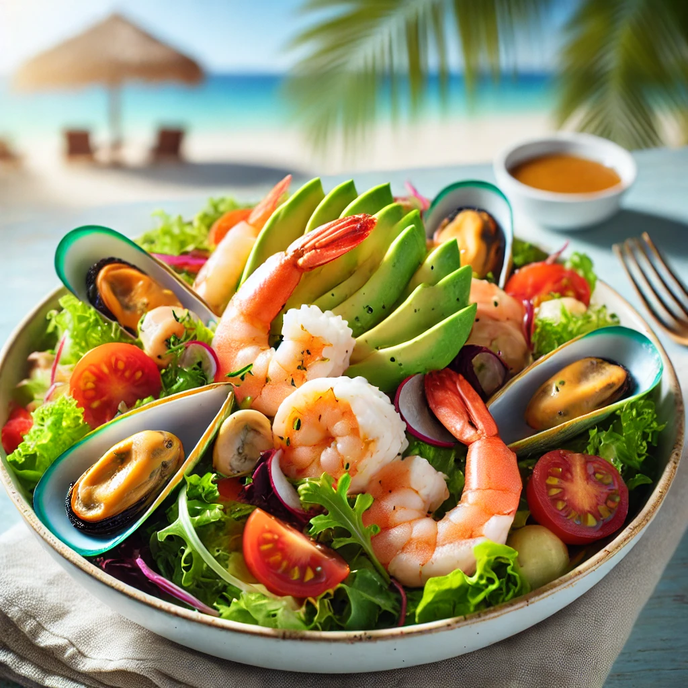

THE BUSTY MERMAID

Shipwrecked Seafood Salad
Ingredienser og Oppskrift:
Velkommen til vårt Shipwrecked Seafood Salad! Den perfekte retten for de som ønsker å smake på havets skattekiste mens de navigerer i et hav av smaker. Denne deilige salaten er fylt med havets beste skatter – akkurat som et sjørøverskatt, men mye sunnere!
Så, hva inneholder denne magiske sjømatretten? Her er oppskriften på vår Shipwrecked Seafood Salad:
- Råkostsalat (for en krisp og frisk base som minner om sjøbrisen)
- Reker og blåskjell (som har vært på en eventyrlig reise over de syv hav)
- Avokado (som en myk og deilig øy etter et stormfullt hav)
- Cherrytomater (for en fargerik og sprudlende smak, som en solnedgang over sjøen)
- En dressing laget med lime og havsalt (for å tilføre den siste tangy touchen)
Hvordan lage denne retten:
- Start med å forberede salaten – vask og tørk alle grønnsakene og skjær dem i passende biter.
- Legg sjømatet på toppen av salaten og pynt med avokado og tomater.
- Lag dressingen ved å mikse limejuice og havsalt i en liten skål, og hell den over salaten.
- Skål, og nyt smaken av sjømatet som har seilt over de ville bølgene til din tallerken!
OBS: Denne retten har en tendens til å få folk til å føle seg som de har funnet den største skatten under havet – vær forsiktig, det kan bli svært avhengighetsskapende!